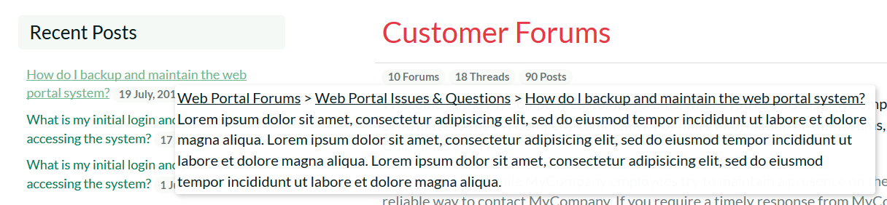
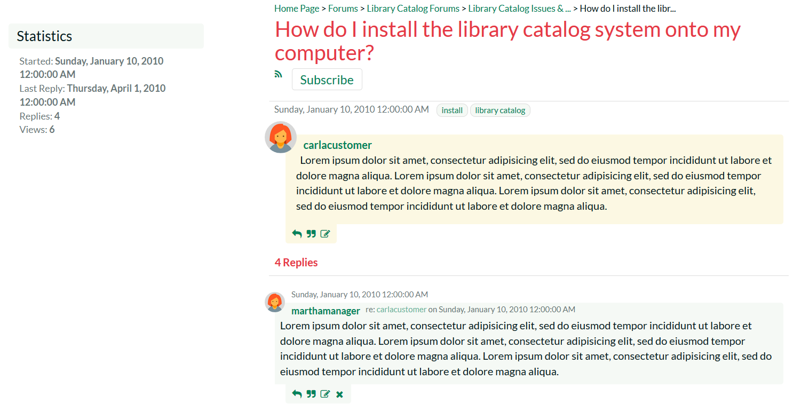

Forums
The KronoDesk® support forums provide the next level of support to customers. Where a fully codified knowledge base article has not yet been synthesized and created by the support agents, the support forums provide a place where users can search for existing messages concerning the same problem. The support forums thereby provide a community where customers and support agents can post replies to common questions visible to the entire community.
Category List
When you click on the Forums option in the global navigation, you will be taken to the forum home page that displays a list of all the categories and associated forums, together with widgets that display recent posts, and a tag cloud:

Each category will be displayed together with the list of active forums in the category. Each forum will be displayed along with the number of threads and replies in the forum as well as information describing the last post made in the forum.
If the forum icon is filled-in, it means that there is at least one new thread or reply in the forum that you have not already read. If the forum icon is not filled-in, it means that there are no new forums or replies since the last time you visited.
Tag Cloud
The tag cloud displays a list of all the tag names associated with forum threads in the system. The size of the font is proportional to the number of threads associated with the tag. Clicking on a tag name will take you to the following page that lists all the threads that have been tagged with the specific tag:
Recent Posts
This widget displays a list of the most recent forum posts in the system, including the name and date of the post. Positioning the mouse over the title will display a popup tooltip containing the long description of the post.

Category Details
If you click on the name of a category, it will bring up the category details page:

This page displays the selected category together with a list of active forums in the category. Each forum will be displayed along with the number of threads and replies in the forum as well as information describing the last post made in the forum. The Recent Posts widget will also be filtered to only include threads/posts from the current category. The Tag Cloud will show tags from all categories.
If the forum icon is filled-in, it means that there is at least one new thread or reply in the forum that you have not already read. If the forum is not filled-in, it means that there are no new forums or replies since the last time you visited.
Forum Details
If you click on the name of a forum, it will bring up the forum details page:

This page displays all the threads in the selected forum, together with the number of replies to the thread, the number of times the forum has been viewed and a description of the most recent reply to the thread.
If the thread icon is filled-in, it means that there is either a new thread or there is at least one new reply that you have not already read. If the thread is not filled-in, it means that you have already viewed the thread and that there are no new replies since the last time you visited.
If you click on the RSS icon, you can subscribe to the current forum in an RSS-compatible newsreader. If you click on the "Subscription" hyperlink underneath the forum title, the forum will be added to your list of subscribed forums. Whenever a new thread is posted or a new reply occurs, you will receive an email notification.
In addition, the Most Popular widget displays a list of the forum threads that have been most frequently viewed by users of the system. Each thread is displayed with its title and date of publication. Positioning the mouse over the title will display a popup tooltip containing the long description of the thread.
Starting a New Thread
If you are logged in as an authenticated user, you can click on the "Start New Thread" hyperlink to create a new forum thread:

You need to enter the subject, description and meta-tags for the new thread. Once you are satisfied with your submission you should click the "Post Message" hyperlink to add the new thread to the forum. If you would like to subscribe to the new thread (and thereby get notified when someone replies), make sure to check the "Subscribe to this thread" box before submitting.
Thread Details
If you click on the name of a thread in the thread list, it will bring up the thread details page:

This page displays the subject and description of the thread together with a list of replies from different users. Each reply will be displayed along with information that describes whether the reply is a direct response to the thread itself or a reply to one of the other replies.
If you click on the RSS icon, you can subscribe to the current thread in an RSS-compatible newsreader. If you click on the "Subscribe" hyperlink underneath the thread title, the thread will be added to your list of subscribed threads. Whenever a new reply occurs, you will receive an email notification.
The tags section under the heading displays a list of the meta-tags associated with the current thread:

Clicking on the meta-tag name will automatically take you back to the thread search page where you can see a list of other threads that have been tagged with the same keyword.
Depending on your role, you will see different operations available for the thread and each of the individual replies:
-
Reply -- this allows you to reply to the thread or a specific message (see below)
-
Quote -- this allows you to reply to the thread or a specific message, quoting the text (see below)
-
Edit -- this allows you to make changes to the thread or reply (see below)
-
Delete -- this will delete the thread or reply
Reply to Thread
When you click on the "Reply" hyperlink it will display the following dialog:

You need to enter the description of your reply to the original post. Once you are satisfied with your submission you should click the "Post Reply" hyperlink to add the new response to the thread. If you would like to subscribe to the thread (and thereby get notified when someone replies), make sure to check the "Subscribe to this thread" box before submitting.
Reply to Thread with Quote
When you click on the "Quote" hyperlink it will display the following dialog:

You need to enter the description of your reply to the original post. The original post or reply will be displayed inside a grey box. You can delete some of the text inside the box so that you can make it clear which part of the original message you are responding to.
Once you are satisfied with your submission you should click the "Post Reply" hyperlink to add the new response to the thread. If you would like to subscribe to the thread (and thereby get notified when someone replies), make sure to check the "Subscribe to this thread" box before submitting.
Editing a Thread/Reply
When you click on the "Edit" hyperlink it will display the following dialog:

This page lets you edit a specific thread or reply in the forum. You can edit the subject, body and tags of the message. Once you are satisfied with your changes, click the [Save] button to commit the changes.